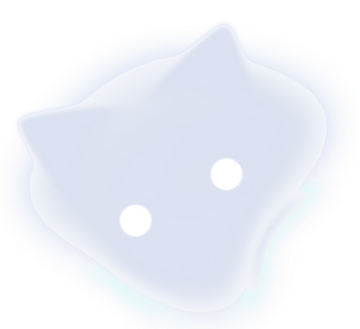
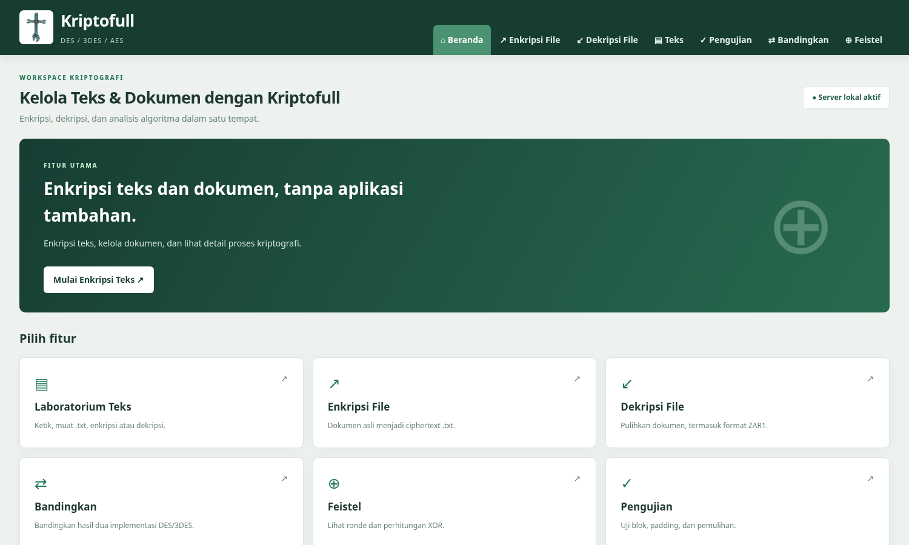
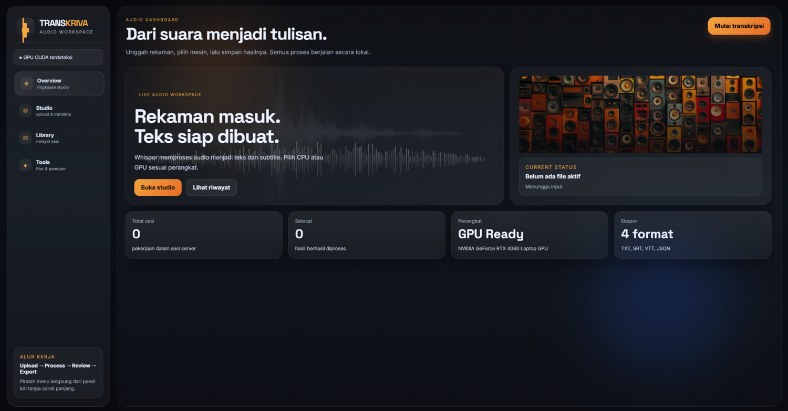
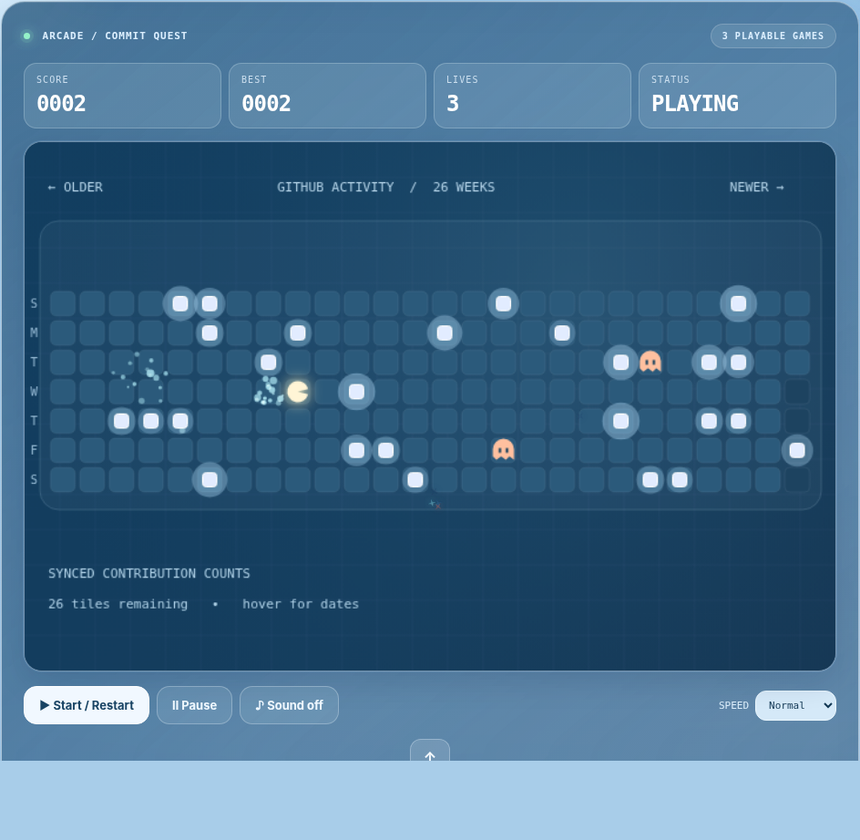

JIMNY / COFFEEDashboard • Menu • Inventory
COFFEE MANAGEMENT
Better coffee.
Smarter operations.
Smarter operations.
Orders
POSInsights
ChartsRestock
Ready
POSInsights
ChartsRestock
Ready

DION / BUILDSDION AGUNG KADANGCREATIVE DEVELOPER
I build web apps, tools, and little games that feel good to use.

ENCRYPT / DECRYPT


I'm Dion, an Informatics student. I like turning ideas into working applications, mixing practical engineering with playful interfaces.
WHAT I WORK WITH ↗Three photos.
Tap a photo to view it.
Building responsive, usable websites with careful layouts and interactive details.
Working with application logic, server-side programming, routes and integrations.
Structuring relational data and analyzing datasets to support real applications.
Collaborative workflows, version control, debugging and developer environments.
Machine learning · security · software design.
Three games, one playground.
Contribution data syncs when available. Offline sessions use clearly labeled practice tiles.
From my GitHub.
Find me online.